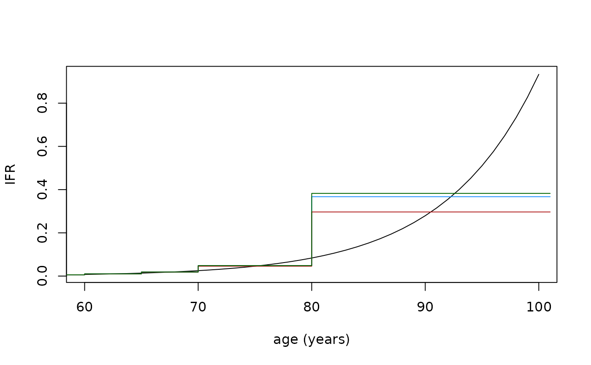

Blend Parameters
blend.Rdblend extracts aggregate parameters from an alembic object.
Arguments
- alembic_dt
an
alembic()return value
Value
a data.table of with two columns: model_partition (partition lower
bounds) and value (parameter values for those partitions)
Examples
ifr_levin <- function(age_in_years) {
(10^(-3.27 + 0.0524 * age_in_years))/100
}
age_limits <- c(seq(0, 69, by = 5), 70, 80, 101)
age_pyramid <- data.frame(
from = 0:101, weight = ifelse(0:101 < 65, 1, .99^(0:101-64))
)
age_pyramid$weight[102] <- 0
# flat age distribution, then 1% annual deaths, no one lives past 101
alembic_dt <- alembic(ifr_levin, age_pyramid, age_limits, 0:101)
ifr_blend <- blend(alembic_dt)
# the actual function
plot(
60:100, ifr_levin(60:100),
xlab = "age (years)", ylab = "IFR", type = "l"
)
# the properly aggregated blocks
lines(
age_limits, c(ifr_blend$value, tail(ifr_blend$value, 1)),
type = "s", col = "dodgerblue"
)
# naively aggregated blocks
ifr_naive <- ifr_levin(head(age_limits, -1) + diff(age_limits)/2)
lines(
age_limits, c(ifr_naive, tail(ifr_naive, 1)),
type = "s", col = "firebrick"
)
# properly aggregated, but not accounting for age distribution
bad_alembic_dt <- alembic(
ifr_levin,
within(age_pyramid, weight <- c(rep(1, 101), 0)), age_limits, 0:101
)
ifr_unif <- blend(bad_alembic_dt)
lines(
age_limits, c(ifr_unif$value, tail(ifr_unif$value, 1)),
type = "s", col = "darkgreen"
)
